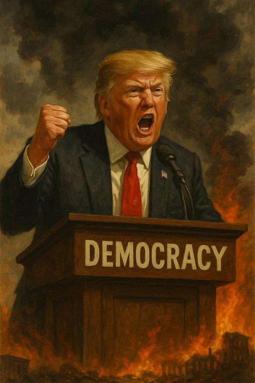

Publicado em 2025-07-13 12:55:18
Por Francisco Gonçalves in Fragmentos de Caos
Há momentos na história em que sentimos que o mundo se desloca num eixo torto, como se a bússola moral da civilização girasse sem norte. Vivemos, talvez, um desses momentos. Donald Trump — figura de exaltação, de riso grotesco e de cólera crua — voltou a encarnar não apenas um homem, mas um colapso anunciado do espírito democrático.
O que vemos não é apenas um presidente a governar com impulsos erráticos e políticas destrutivas. Vemos algo mais perigoso: a banalização do absurdo, o esvaziamento das instituições e a corrosão do contrato social.
Trump não é louco. Ou melhor, é — mas é um louco funcional, estrategicamente caótico. Ataca a verdade como quem dispara num campo de trigo: cada bala uma mentira, cada mentira uma semente de dúvida. Desregula por capricho. Nomeia cúmplices. Exonera guardiões. Torna o poder um espelho de si próprio. E tudo isto, sob aplauso de milhões.
Mas a pergunta ecoa, como um sino rachado:
Poderá a democracia sobreviver a quatro anos deste enredo de insanidade?
Acreditámos que a democracia era eterna, como o céu sobre as repúblicas. Que bastava votar, e a liberdade estava garantida. Esquecemo-nos que a democracia não vive do voto sozinho — vive da cultura cívica, da ética no poder, da verdade como princípio e da justiça como base.
Hoje, vemos o contrário. A verdade é relativizada, a justiça instrumentalizada, a cultura cívica intoxicada por memes e ódio.
E o mais grave: muitos acham isto normal.
Trump é o maestro de uma era onde o ruído substituiu o pensamento. Cada tweet seu é uma granada lançada no campo do discurso racional. Governa com frases de reality show e leis de papel queimado.
O que ele desregula não são apenas normas ambientais ou fiscais. Ele desregula o próprio tecido simbólico da democracia. Transformou a verdade em opinião e o Estado em palco. E neste teatro de horrores, a multidão ri. Até quando?
Sim, há juízes que resistem. Há jornalistas que não se calam. Há cidadãos que protestam. Há senadores que ainda têm vergonha. Mas a resistência cansa. A cada dia, o absurdo ganha nova forma. E o medo instala-se: e se isto for o novo normal?
Portugal, Europa, América Latina, África — todos deveríamos olhar para este espelho estilhaçado. Trump não é um fenómeno isolado. É um aviso. É a febre de um corpo político doente.
A pergunta verdadeira não é "irá a América sobreviver a Trump?", mas sim:
"seremos nós, cidadãos do mundo, capazes de reconstruir uma democracia real após ele?"
A história não é um comboio sem travões. É um caminho que podemos desviar — se quisermos. Cada cidadão atento, cada palavra justa, cada voto consciente, cada gesto de coragem... é um tijolo na reconstrução do futuro.
A democracia sobrevive quando deixamos de ser espectadores e voltamos a ser autores.
Conclusão: O Louco Passará. E Nós?
Trump passará. Como passam todos os homens, mesmo os que se acham deuses. Mas o que ficará?
Uma república em ruínas?
Ou uma sociedade desperta?
Cabe-nos a nós decidir.
Com lucidez.
Com coragem.
E com voz.
Porque o silêncio, esse sim, é a verdadeira sentença de morte da democracia.